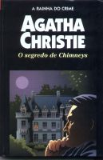

O Segredo de Chimneys
The Secret of Chimneys
No magnífico palácio de Chimneys morre assassinado o monarca de um país dos Bálcãs. Somam-se ao crime o desaparecimento de um manuscrito revelador de importantes segredos de Estado, o roubo de uma coleção de cartas comprometedoras e a existência de um valioso diamante escondido no palácio. Ao redor destes fatos misteriosos movimentam-se os principais personagens do romance: o simpático e corajoso aventureiro, cuja identidade é enigmática, Anthony Cade, que traz o manuscrito da África; a atraente Lady Virginia Revel, que, com a ajuda de Anthony oculta o cadáver de um chantagista; um célebre ladrão, o “Rei Vítor”, que procura apoderar-se do valiosíssimo diamante; o alto e pomposo funcionário do Foreign Office, George Lomax; o colecionador de livros raros H. Fish, que de livros sabe muito pouco; o magnata Isaac Stein, que quer explorar o petróleo balcânico; o inteligente e imperturbável superintendente Battle, da Scotland Yard, que sempre sabe mais do que aparenta; e por fim, o velho proprietário de Chimneys, Lord Caterham, que só pretende, inutilmente, que o deixem em paz, e no qual a romancista concentrou seu característico sentido de humor.
Gabriela Pires: O valente Anthony Cade voltou à Inglaterra depois de mais de 20 anos com a missão de entregar as memórias do Conde Stylpitch à uma determinada editora e cartas de um falecido chantagista a Virginia Revel. Todos querem se apoderar do manuscrito que revela segredos que o governo inglês por anos abafou além do esconderijo de um valioso diamante roubado pelo Rei Victor. Logo o manuscrito e as cartas são roubadas e Anthony ajuda Virginia a esconder da polícia o cadáver encontrado na casa dela. Na mesma noite, o príncipe da Herzoslováquia é assassinado em Chimneys. Nesse ambiente de mistério, o Coronel Battle contará com a ajuda de Cade para deslidar esses assassinatos, recuperar o manuscrito, encontrar os Camaradas da Mão Vermelha que queriam a morte do príncipe e descobrir qual hóspede do palácio de Chimneys é o famoso Rei Victor.